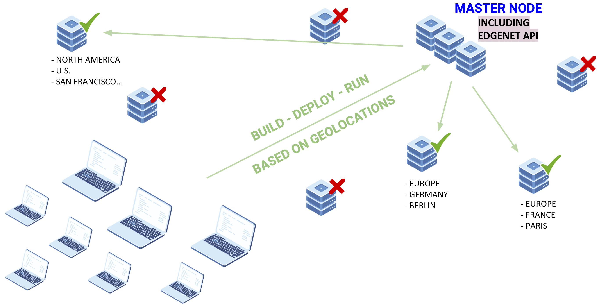
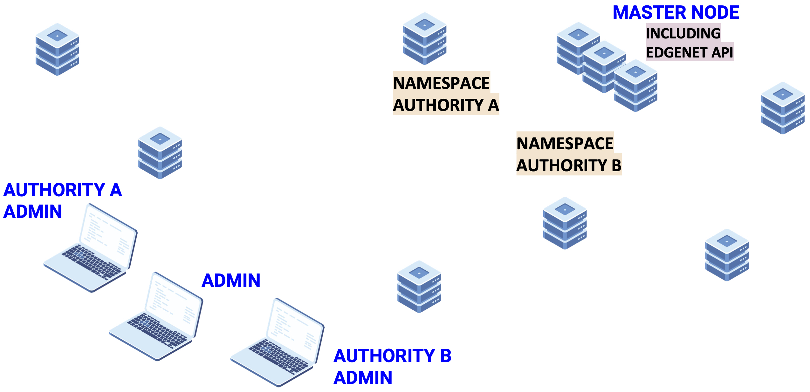
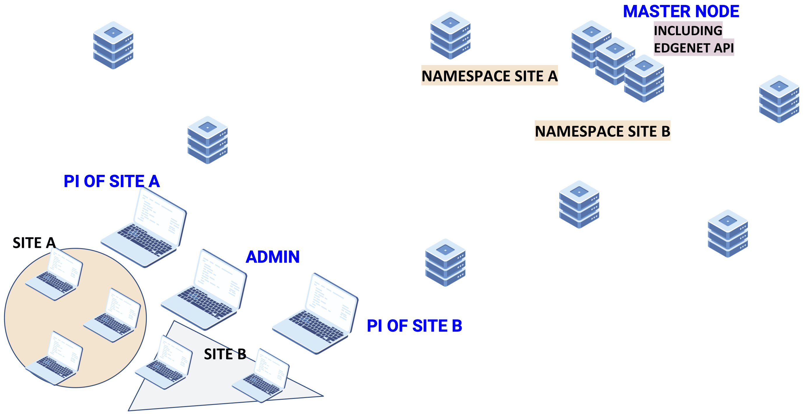
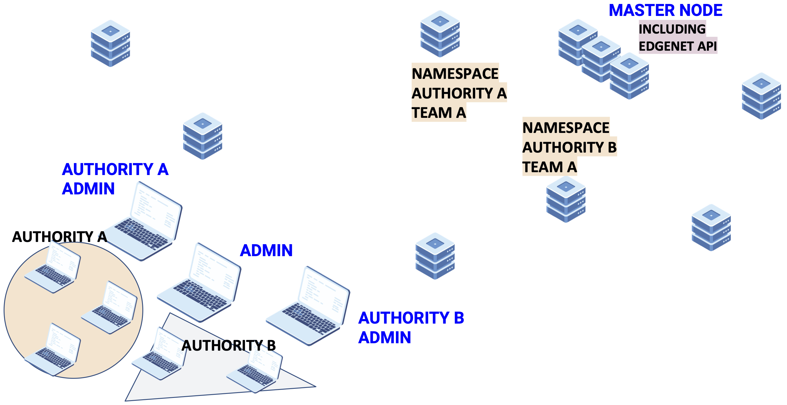
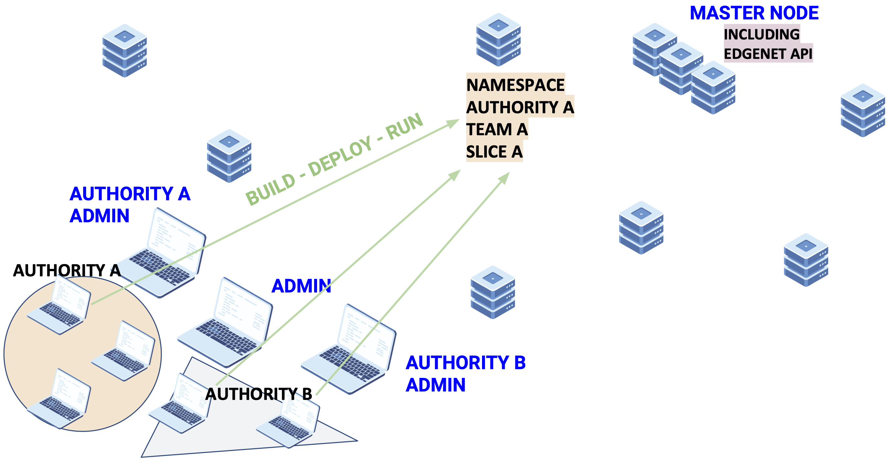

If you know how to use Kubernetes, you know how to use EdgeNet. Since EdgeNet is built on Kubernetes, you drive it via the familiar kubectl command line tool, or the Kubernetes dashboard web interface. These tools have been augmented with the EdgeNet-specific extensions that are detailed below.
Selective Deployment
EdgeNet’s value as compared to vanilla Kubernetes is its ability to deploy containerized software to a widely distributed set of nodes rather than to nodes that are all grouped together in a centralized datacenter. As an EdgeNet user you want to choose your nodes based upon their locations. We give you the opportunity to do so based on continent, country, state/region, and city, as well as on polygons that you describe using latitudes and longitudes. Further development will increase your possibilities; please let us know what is important for you!
 As a Kubernetes user, you are already comfortable with creating, updating, and deleting its DaemonSet, Deployment, and StatefulSet API resources so as to schedule Pods to a cluster’s nodes. If you create a DaemonSet then your Pods will run on all available nodes of the cluster, whereas with a Deployment or a StatefulSet, your Pods will run on as many nodes of the cluster as Kubernetes judges best, based upon its assessment of container resource consumption and available node resources, whereas. Whichever controller you choose in vanilla Kubernetes, you are indifferent to which nodes run your Pods, as they are all located in a centralized datacenter. But when you deploy to the edge cloud, you want to select nodes at particular locations for your Pods. Through EdgeNet, you can select those nodes by defining a subcluster. For instance, a DaemonSet defined as having five nodes in Germany and four in France will ensure that your Pods are deployed to nine nodes that meet those criteria.
The SelectiveDeployments CRD, as a namespaced API resource, enables deployments based on geolocations. The system basically reconfigures the native Kubernetes controllers, which are DaemonSet, Deployment, and StatefulSet, to fulfill its task.
When a selective deployment object is created, the controller adjusts node affinities of DaemonSets, Deployments, or StatefulSets existed in that object to establish deployment of applications according to the geolocations defined. The system searches the latitude & longitude information of nodes in a GeoIP database to pick up the nodes and set node affinities.
Authorities
 Authorizations to use EdgeNet are handed out hierarchically, so that local administrators approve local users who they know. The central administrators of EdgeNet approve the establishment of authorities, each authority having its own local authority administrator called an authority-admin. An authority-admin, in turn, approves the creation of individual user accounts. Authority-admins also approve the creation of teams, which group users. And the authority-admins may be responsible for nodes that are contributed to the EdgeNet cluster. Authority Operations in EdgeNet consist of two Custom Resource Definitions; AuthorityRequests, and Authorities. Those allow us to enable user roles that we desired in Kubernetes. You could find the details of each below. There is a public endpoint, can be interacted using public kubeconfig file, for the requests of authority and user registrations.
The Authority CRD, as a non-namespaced API resource, enables establishing the user role models that we desired and designed in Kubernetes. Thereby, a user group with a hierarchy of authority responsibility can use EdgeNet under the roof of a authority. Moreover, a authority hosts the teams that allow the users of that authority to create slices freely, and the slices that users can deploy their applications, by the respect of resource quota constraints of that slice, towards the EdgeNet cluster.
Only cluster admins and authority requests approved by cluster admins may create a authority object in EdgeNet. To create a authority, no other users are allowed or there is no other way. When a authority is created, an authority-admin user is created based on the Authority's contact information.
Authority Requests
The AuthorityRequests CRD, as a non-namespaced API resource, provides a public endpoint to allow making authority registration requests independently. A user who wishes to register his authority at EdgeNet can do that directly by using the EdgeNet Portal or by kubectl with an EdgeNet public kubeconfig file that can be obtained by requesting the portal to a valid email address.
The controller behind this custom resource automatically removes the registration request after 72 hours if the registration request is not approved by a cluster-admin. When a authority request object is created, the system sends an email verification object to the contact of that authority. Cluster-admins are not notified until the email is verified. In case of a cluster-admin approves a authority request, the controller creates a authority object according to the authority request which gets deleted after.
But, how it works?
When a registration request has been made, EdgeNet sends an email including a one-time code for the email verification
of that user. That is to avoid struggling with fake registration requests. At this point, there is no notification
reaches to the email address of the EdgeNet cluster admin. Then, authority-admins verified their email address, need to be done in
24 hours, by using the one-time codes they received.
This is the time the cluster-admin needs to take action that is approving the request before 72 hours in total passed away. Because the admin gets a notification about the authority requests since authority-admin verified the email address. In the next steps, the authority request controller creates a authority object according to request data. And, when a authority is created in EdgeNet, the authority controller generates a namespace by combining the authority name and the string of “authority” as a prefix, then sets a resource quota in it to prevent deploying applications in this namespace, and creates an authority-admin user. Herewith, the authority controller sends a notification that says your authority creation is successful while the user controller creates a service account dedicated to the user and generates a kubeconfig file to deliver it along with the user information by email. Authority-admin can now start using EdgeNet with the user-specific kubeconfig file, which means authority-admin is ready to welcome user registration requests on the authority.
Users
 The User CRD, as a namespaced API resource, assigns service accounts to users and delivers kubeconfig file that generated according to that service account. The system attaches role bindings to service account based on their user roles to fulfill desired user role models. Thereby, a user can do actions that correspond to the user role in Kubernetes. Only cluster admins or authority-admins(s) of that authority and user registration requests approved by a cluster-admin or an authority-admin or a manager of that authority may create a user object in EdgeNet. To create a user, no other users are allowed or there is no other way. Authority-admin can change user roles after user object is created.
User Registration Requests
The UserRegistrationRequests CRD, as a namespaced API resource, provides a public endpoint to allow making user registration requests to authorities independently. A user who wishes to register himself to a authority at EdgeNet can do that directly by using the EdgeNet Portal or by kubectl with an EdgeNet public kubeconfig file that can be obtained by requesting the portal to a valid email address. The user registration request only covers the regular user role.
The controller behind this custom resource automatically removes the registration request after 72 hours if the registration request is not approved by a cluster-admin or an authority-admin or a manager of that authority. When a user registration object is created, the system sends an email verification object. The authority-admin(s) and manager(s) are not notified until the email is verified. When a user registration request gets approved, the controller creates a user object according to the user registration request which gets deleted after.
Likely authority-admins have been done, but with a difference, users make registration requests on authorities that already registered in EdgeNet. And again EdgeNet has the same procedure about email verification to prevent fake requests on the authorities that would be boring for authority-admins if EdgeNet informs them about all requests without email verification. As authority-admins receive the kubeconfig file by email, the user controller delivers the user information along with a kubeconfig file to the user's email address. So, users can now start using EdgeNet as well. But, the authority namespace is not a workspace which users collaborate with.
Email Verifications
The Email Verification CRD, as a namespaced API resource, enables EdgeNet make email verifications in Kubernetes. The system sends an email providing a unique identifier that allows a user to verify the email address.
The controller behind this custom resource automatically removes an email verification object after 72 hours if the email is not verified by the owner.
Acceptable Use Policy
The Acceptable Use Policy (AUP) CRD, as a namespaced API resource, ensures that EdgeNet is GDPR compliant. Any user registered in a authority has to accept this policy to start using EdgeNet. A user must accept this policy every 6 months.
The controller behind this custom resource automatically turns the AUP object into unaccepted after six months if the AUP is not accepted and extended in this period.
Teams
The Teams CRD, as a namespaced API resource, empowers users to create slices independently, rather than just sticking this authorization to authority admins and managers. Participants of a team, ie users, may belong to different authorities. And, the authority-admin(s) and manager(s) of the authority on which team created are natural participants of that team.
When a team object is created, the controller crafts a namespace that provides general authorization to create slices on it. Thereby, any participant of a team can create a slice freely. Additionally, the authority-admin(s) and manager(s) of the authority on which team created and the participants of the team get their invitations by email containing team information.
 Authority-admins or Managers authorized by authority-admins can create teams by choosing users from different authorities. When a team is created, the team controller generates a namespace and sets the name by combining authority namespace and team name. For example, authority-a-team-a as you can see at the top middle of this slide. But, it is not allowed to deploy applications in a team namespace either. However, a team namespace authorizes users who participate in, to create slices in the team namespace.
Users participating in a team namespace can create slices by choosing users from different authorities. When a slice is created, the slice controller generates a namespace the same as the team controller does but it sets a resource quota depending on the slice profile.
Slices
 The Slices CRD, as a namespaced API resource, allows users to deploy their applications towards the cluster. There are three slice profiles, which are Low, Medium, and High, that directly impacts on the expiration date and resource quota. Participants of a slice, ie users, may belong to different authorities. And, the authority-admin(s) and manager(s) of the authority on which slice created are natural participants of that slice.
The controller behind this custom resource automatically removes a slice object after the expiration date expires if the slice is not extended. When a slice object is created, the controller sets an expiration date and crafts a namespace with a resource quota and those parameters are determined by the system depending on the slice profile. Additionally, the authority-admin(s) and manager(s) of the authority on which slice created and the participants of the slice get their invitations by email containing slice information.
Future Work
- Authority & Team Consumable Resource Right
- Define a consumable resource right in Authority to prevent over slice creation and provide the justice of resource sharing.
- In the team, authority-admin may want to limit over slice creation which drains all the resource right.
- Node allocation in Slices
- Shift certain CRDs into API aggregation
- To provide better UX
- Service migration in Selective Deployment
- Lightweight Kubernetes
- Accountability
- Load Balancing @Application Layer